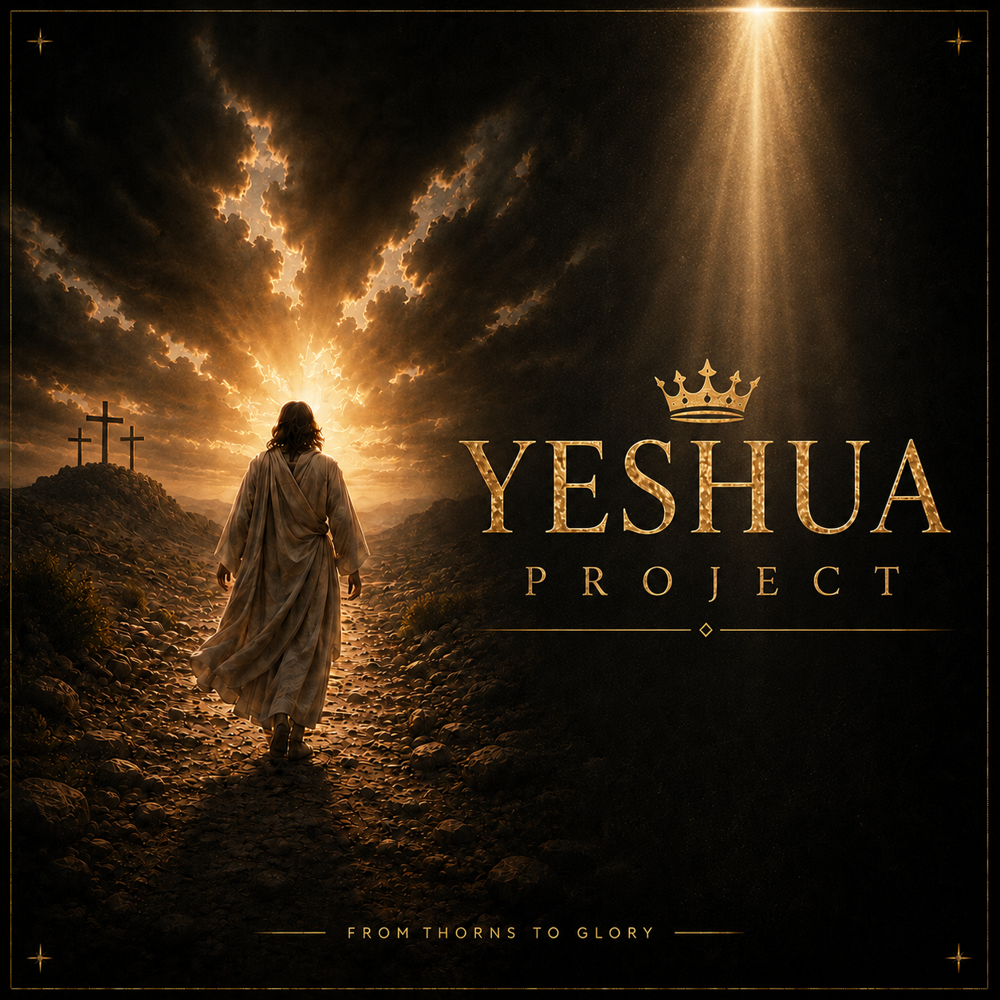

Jesus inspired social stories
fromThorns ToGlory
Cinematic scripture shorts, worshipful visuals, and simple reminders that the grave is empty and hope still speaks.
Latest stories
Every published Short from the YouTube channel.
Each video transforms a Bible passage into a vertical scene with bold imagery, reverent music, and a clear message of faith, hope, rest, courage, and glory in Jesus.
The Hidden TreasureMusic
Known By Love
Stream the latest music from fromThornsToGlory directly from Spotify.

Visual identity
Gold light, red thorns, and the road from death to life.
The artwork leans into contrast: darkness against glory, thorns against a crown, the cross against sunrise. It gives the social page a recognizable language before the first caption is read.
The mission
Faith visuals for people scrolling through heavy days.
fromThornsToGlory turns Scripture into short, cinematic moments built for social media: a resurrection scene, a healing touch, a road lit by mercy, a reminder that Jesus meets us in the place we thought was finished.
The page is designed to encourage, invite prayer, and make the gospel feel visually alive in the middle of everyday feeds.
Social media
Follow, share, and help the next video reach more hearts.
Use the same handle everywhere for a clear search signal: @fromThornsToGlory. Listen on Spotify and Apple Music, follow the YouTube channel, and share the latest faith-filled shorts.